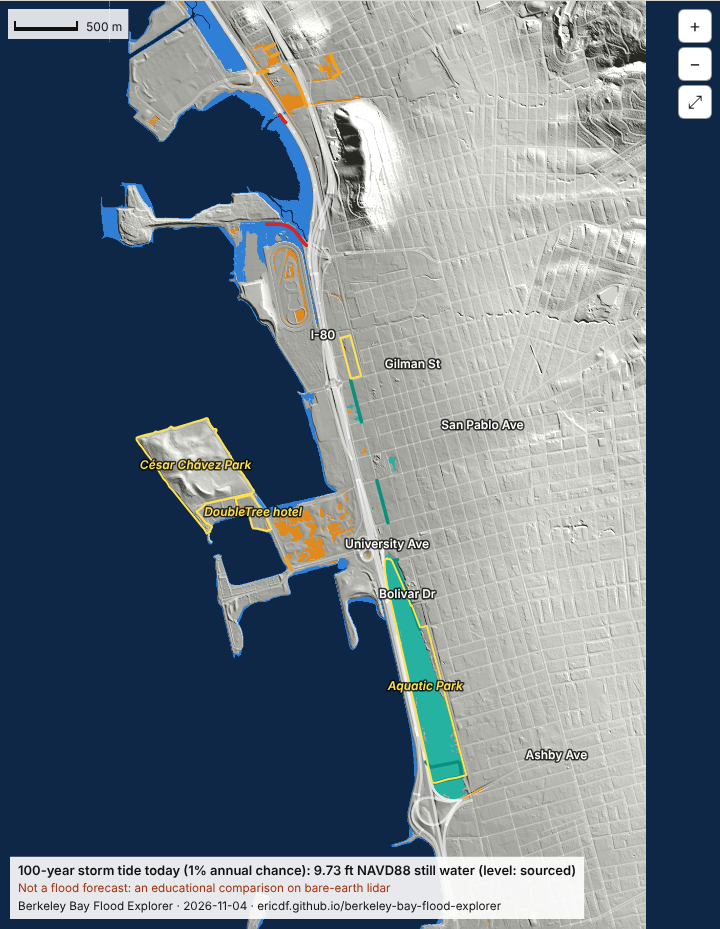

Screenshot from today's explorer
Explore how storm tides, sea level rise and heavy rain could affect west Berkeley's streets, critical infrastructure, I-80, pollution sources and the Bay shoreline. Not a flood forecast.
